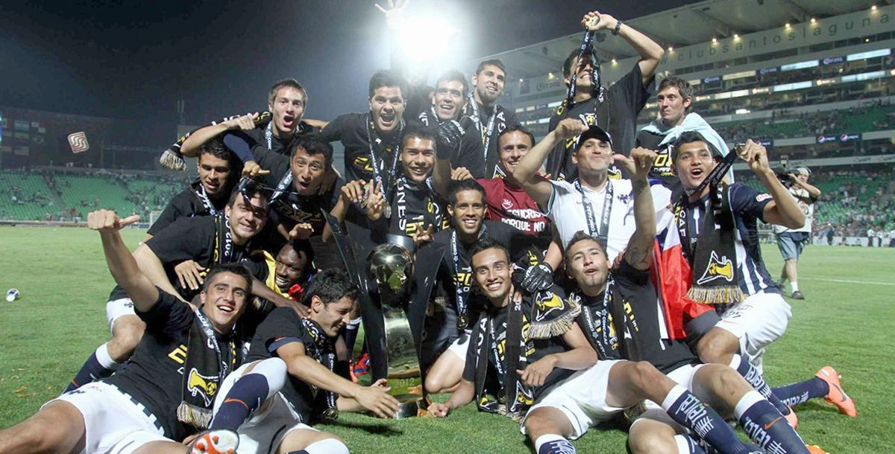

El segundo titulo de Concacaf:
Rayados tuvo la oportunidad de defender su corona al participar en la edición 2011-2012 de la Liga de Campeones de Concacaf. Una vez más logró acceder a la Final, en la que enfrentó al Santos Laguna. El 18 de abril de 2012, Rayados prácticamente amarró el bicampeonato al vencer 2-0 en el Estadio Tecnológico con dos grandes goles de Humberto Suazo, cuya leyenda continuaba creciendo. Una semana después, en Torreón, Rayados perdió el partido de Vuelta 2-1, pero en el global se coronó campeón 3-2 gracias al gol conseguido por Neri Cardozo a nueve minutos del final y que apagó las ilusiones de los laguneros.